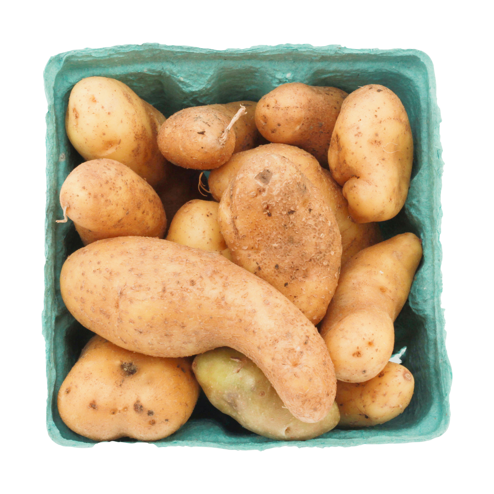

The one that started it all, #1 seller according to the potato lovers association
Strike it rich with Yukon Gold, a worthy investment in one’s diet
Not gonna lie this right here...it’s a good yam...I need a moment

Finally a fruit and potato become one, *Russian National Anthem Intensifies*
このバランスは、すべてのものにすべき. I wonder what that potato said?
If they ask about them all you gotta say is, “C’est petite et mignon” works every time
Proof that a root is just a down to earth potato
Roses are red, This potato is new, because everything in here is a color of blue
Doth mother know you wear-eth her purple drapes?